From a Shader Study to a Port
This project grew out of my material and shader study on Eve. Rebuilding her materials showed me how much of the game's look lives in its data, which raised the next question: could the whole Eidos 7 area be rebuilt, piece by piece, in a modern engine?

Placing the Level by Script
I set up a UE 5.8 project, extracted the area's placement data, meshes and textures from the game, then imported and placed everything by script rather than by hand: 6,126 of 6,143 static meshes and 48,972 foliage instances for the first area. This early editor capture shows the starting point, with the landing ship still untextured.
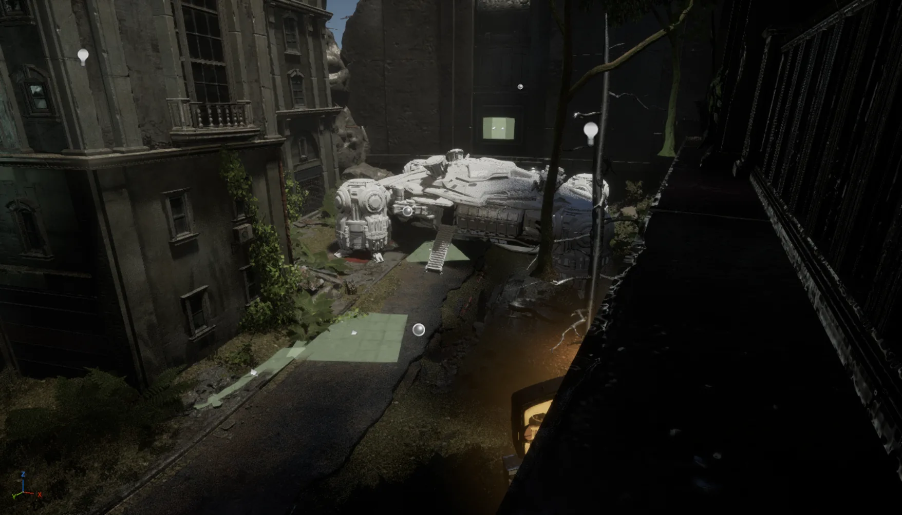
Matching the Game, Not Guessing
I built UE 5.8.2 from source and audited the July import against the game's files. The audit caught real gaps: 1,365 components blocked Eve where the game declares no collision, and foliage drifted by up to 2.5 cm. The main map was rebuilt from the source data, then ocean, waterfalls, fog, rain and lights came back one pass at a time.
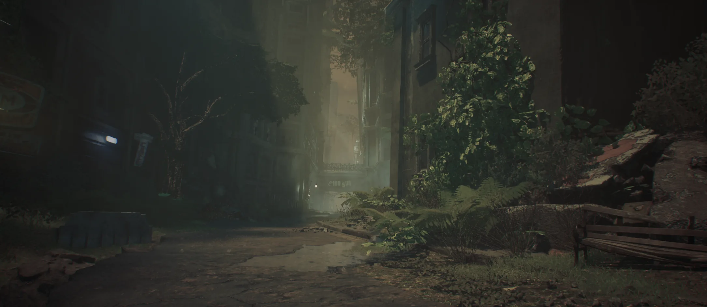
Eve, Playable Against the Antlions
Eve runs on C++ gameplay modules: locomotion blended at the game's own speeds, Light and Strong combos, guard and parry, and the area's three Antlions with their spawn effects. Combat feedback followed: sparks, blood, a 0.07 s hit-stop, the HP and shield HUD, lock-on targeting and the switch between exploration and combat music.
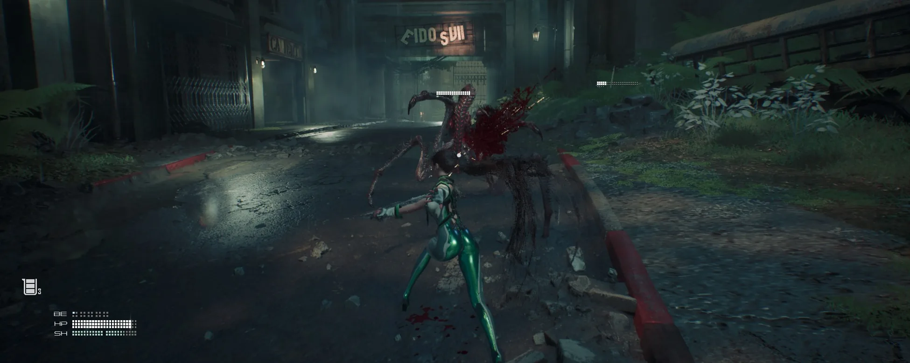
The Opening Cinematic, Shot by Shot
I rebuilt the opening sequence from the game's own sequence data (1,388 tracks) instead of re-animating it: the 5,560 keys of the first converted part match the game bit for bit, and the ship stays within 0.003 cm of its original path. I then filmed the original and compared both cut by cut; the 20 camera cuts line up within 0.06 s. Top: original game. Bottom: my port.
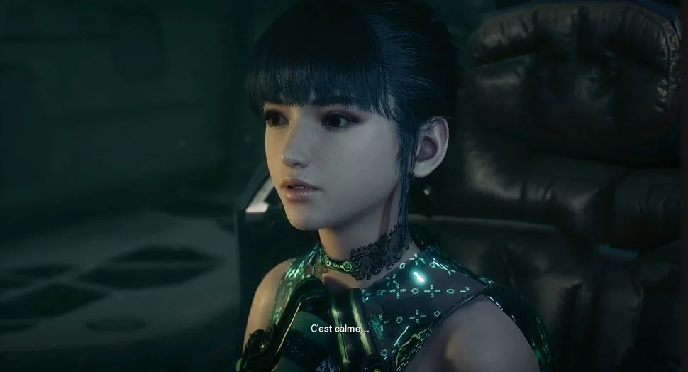
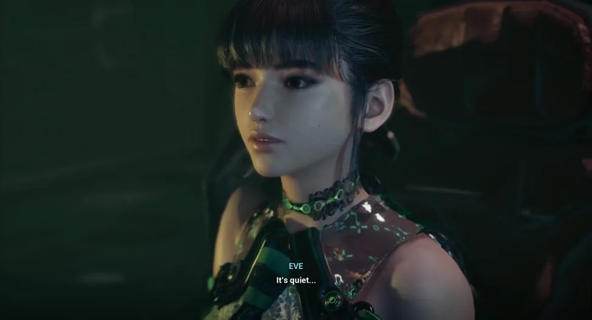
Bugs Found by Measuring
Each visible difference got a measurement before a fix. Eve's face vanished in two shots (top): the engine culled it with fixed bounds because her physics asset was missing, and porting the game's asset brought it back (bottom). Her feet floated 2 cm above the ground: the game sets her mesh 97 cm below the capsule, my port had 95.
More fixes
A shoulder twisted by 111°: one animation track had been filled with the skeleton's reference pose instead of the mesh's. Black bars, then a ×1.26 zoom in cinematics: two camera defaults of the game were not ported, fixed on 30 cameras. Eve sliding while sprinting backwards in lock-on: the sprint branch was not wired into the animation graph.
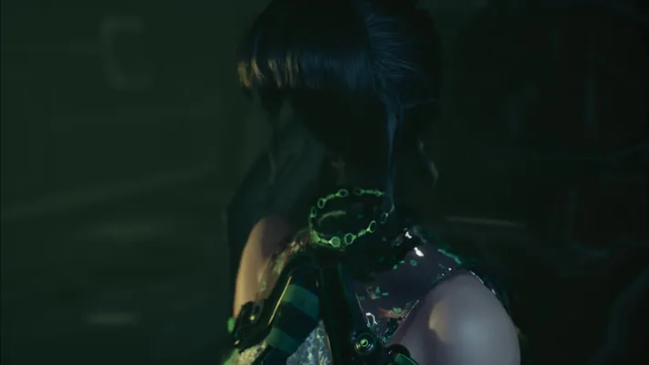
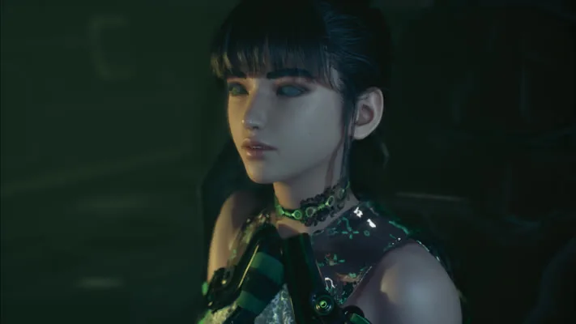
Every Change Checked Against the Original
I run this port as the director of AI coding agents (Codex, then Claude Code): they drive the Unreal editor through MCP and read the game's native code in Ghidra, while I set the goals, film the original game as reference and judge each result against it. Every visible change ships with an original / before / after board like this one: the ship's thrusters during the landing.
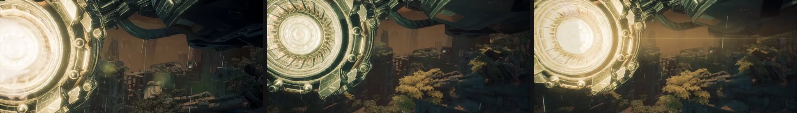
Side by Side
The same frames of the opening cinematic, original game on the left and my UE 5.8 port on the right. Still open: the flyover lighting, the cabin glass, Eve's hair in close-ups and part of the effects are not matched yet.
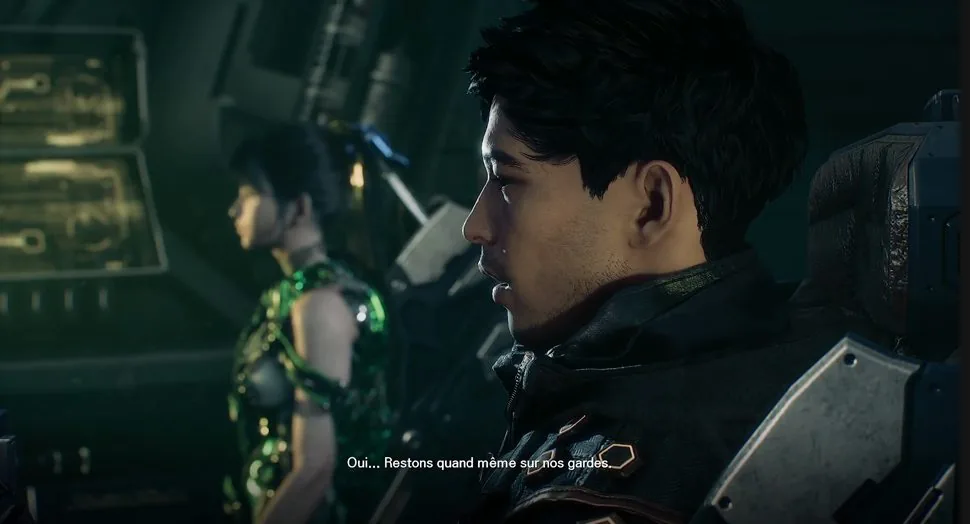
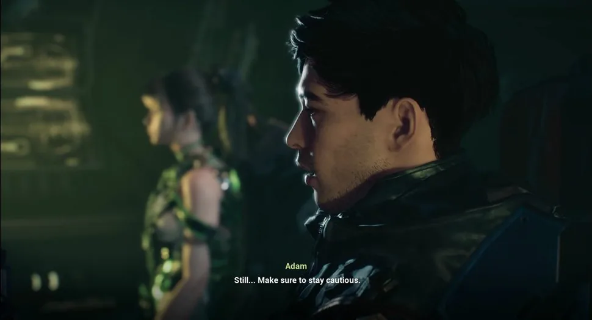
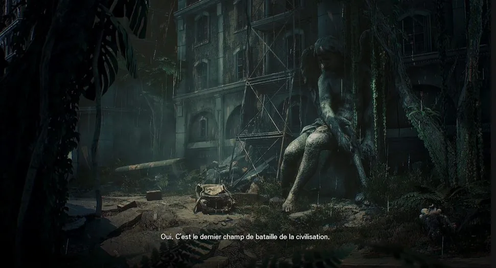
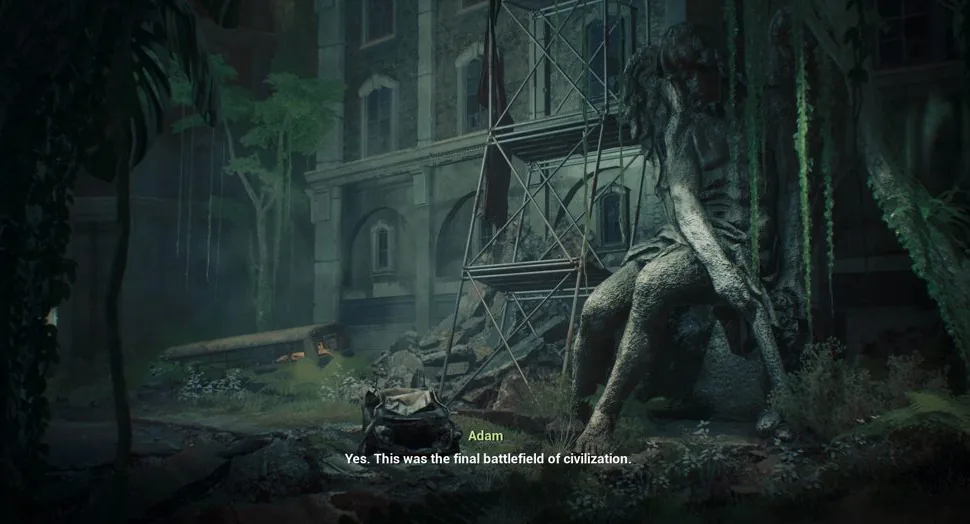
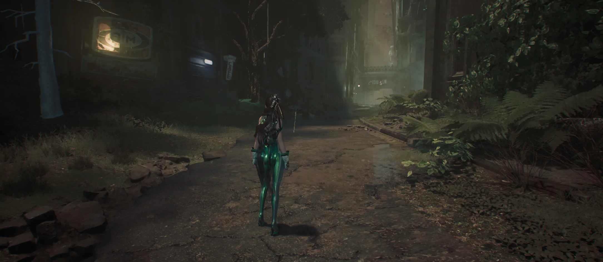